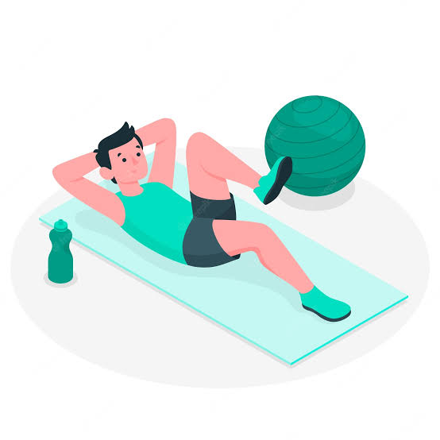
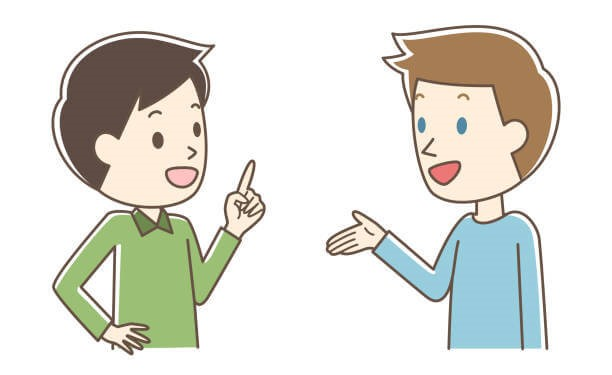

چگونه حافظه ی خود را تقویت کنیم؟
اگر یک دانش آموز یا یک داشنجو یا در کل فردی هستید که مطالعه ی زیادی دارید و نیازمند این هستید که اطلاعات زیادی را به خاطر بسپارید حتما برایتان سوال پیش آمده که چگونه میتوانید حافظه ی خود را تقویت کنید. خوب است بدانید تقویت حافظه نه تنها برای یادگیری عمیق تر و سریع تر مطالب مفید است بلکه خطر ابتلا به بیماری آلزایمر را هم تا حد زیادی کاهش میدهد. پس با ما بمانید و تا آخر این مطلب را مطالعه کنید تا با روش های تقویت حافظه آشنا شوید.
نوشتن لیست کارها، ذخیره مخاطبین در گوشی،طفره رفتن از محاسبه های ذهنی، به خاطر نسپردن تاریخ های مهم و ... این ها همه کارهایی هستند که ما در طول روز انجام میدهیم و به اصطلاح مغز خود را تنبل می کینم. گرچه ممکن است این کار ها خیلی فراگیر یا معمولی به نظر برسد اما بعد از مدتی متوجه خواهیم شد که مغز ما حتی توانایی نگه داشتن اطلاعات ساده و کوتاه را از دست داده و همیشه مجبوریم از دفترچه و ماشین حساب و تقویم کمک بگیریم. به جای آن بهتر است هرکدام را بخاطر بسپاریم و در مورد آن با دیگران به بحث و گفت گو بپردازیم و اینگونه تمرین کنیم تا حافظه ی ما کم کم بازدهی بهتری داشته باشد.
وقتی خودتان را به انجام یک کار جدید عادت میدهید، مسیر های عصبی جدیدی در مغز ساخته میشوند که موجب میشوند در انجام کار های جدید با استعداد تر و کارامد تر عمل کنید. برای مثال کودکان از همان ابتدا نمی توانستند مانند بزرگتر ها با قاشق و چنگال غذا بخورند. آن ها انقد این کار را تکرار میکنند تا مسیر عصبی در مغزشان ساخته میشود و این مهارت را بدست می آورند. کاری که شما میتوانید بکنید این است که سراغ کاری جدید بروید که معمولا انجام نمیدهید. به آن کار فکر کنید و تصمیم بگیرید چگونه میخواهید عمل کنید؟ قدم های کوچک ولی با تداوم در راستای آن کار بردارید تا در نهایت مهارت انجام آن کار را بدست بیاورید. در این روش لازم نیست کار چشمگیری انجام دهید. به برنامه ی روزانه خود نگاهی بیندازید. چه کاری است که باید انجام دهید ولی به سمت آن نمی روید؟ حتی میتواند کار ساده ای همچون مرتب کردن میز کارتان باشد. از همان شروع کنید.
با یادگرفتن یک مهارت جدید نه تنها با بعد دیگری از شخصیت خودتان روبه رو میشوید، بلکه بسته به نوع مهارت حافظه ی شما تقویت میشود و از قدرت بهتری برای تحلیل و تجزیه مطالب برخوردار میشوید. برای مثال یادگیری یک ساز موسیقی باعث میشود در تبدیل اطلاعات دیداری (نت موسیقی) به یک کار عملی (ساز نواختن) مهارت پیدا کنید و یا مثلا با یادگیری یک زبان جدید مغزتان را با شیوه تفکر جدیدی مواجه میکنید و ناگزیر میشوید تا خودتان را با شیوه ی دیگری ابراز کنید.
یکی از خواص بیشمار ورزش کردن، تقویت حافظه است. شما برای ورزش کردن نیازی به تجهیزات خاصی ندارید. فقط با تحرک بدنی به مدت کوتاهی چون ۲۰ تا ۳۰ دقیقه بدن شما از خواصی چون : بهبود در پردازش اطلاعات، تسریع در روند تشکیل اتصالات عصبی جدید در مغز، یادگیری بهتر و افزایش سطح هوشیاری بهره مند خواهد شد که همه موارد به تقویت هر چه بیشترحافظه کمک می کند. نکنه حائز اهمیت این است که سراغ ورزشی بروید که از انجام دادن آن لذت می برید تا بتوانید از آثار آن در طولانی مدت بهره مند شوید.
اگر فرد برونگرایی هستید و دائما از گفت و گو با دیگران لذت میبرید حتما متوجه این شده اید که مطالبی که در گفت و گو با دیگران رد و بدل کرده اید تا مدت زمان طولانی در حافظه تان بجا مانده است. یکی از روش های تقویت حافظه گفت و گوی موثر با افراد است به این معنی که وقتی مطالبی را برای دیگران بازگو میکنیم شاهد این هستیم که بهتر میتوانیم این مطالب را به خاطر سپرده یا در ذهن خود سازماندهی کنیم. برای همین از مقطع ابتدایی تا به بالا میشنیدیم که پدر مادر ها میگفتند:<<اگر میخواهی چیزی تو ذهنت بمونه به یه نفر دیگه هم یادش بده.>>

یک مثل معروف انگلیسی هست که میگوید:
“You are What you eat”
به این معنا که شما همان چیزی هستید که میخورید. صرف نظر از اینکه بقیه موارد بالا را انجام میدهید یا نه باید در نظر داشته باشید که رژیم غذایی یکی از مهم ترین فاکتور ها در تعیین سلامت بدن ، بخصوص مغز است.
موارد زیادی است که باید در خوردن در نظر بگیرید از جمله: حساسیت های خودتان، طبع سرد یا گرم بودن مواد غذایی، آب و هوایی محل زندگیتان و ازین دسته موارد و اهمیت آن بخاظر این است که همانطورکه بعضی خوراکی ها میتوانند عملکرد مغز افراد را بهبود ببخشند و با فراهم ساختن انرژی مورد نیاز افراد آن ها را برای انجام فعالیت های مورد نظر آماده سازند، در مقابل خوراکی هایی وجود دارند که میتواند عملکرد مغز را برای مدتی مختل کنند و یا موجب ناراحتی گوارش یا... شوند.
{برای دیدن لیست خوراکی های مقوی برای مغز کلیک کنید}
حالا که روش هایی برای بهبود حافظه یادگرفته اید وقت آن است که با اقدام به استفاده از این روش ها به زندگی روزانه خود بهبود ببخشید و سبک زندگی خود را به سمت سالم تر بودن هدایت کنید. راهکار های ذکر شده را بکار ببندید تا تندرست تر و باهوش تر ازقبل زندگی کنید.